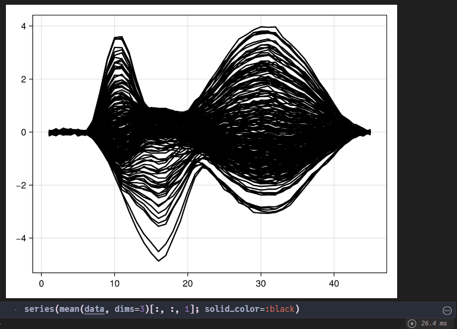
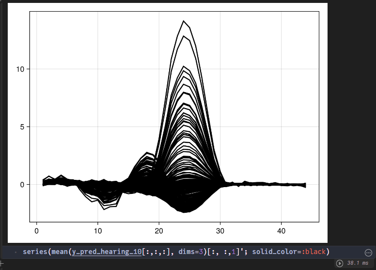

Autoencoder
Team: Shaolong, Ramnath Rao Bekal, Rahul Bhaskaram
Date: 31/8/2024
1. Definition
1.1 Learning Rate
- Too high a learning rate might cause the model to oscillate or even diverge during training, leading to poor convergence. This could result in poor quality of the graphics generated by the autoencoder, with significant loss of detail.
- Too low a learning rate might lead to excessively slow training and the model might get stuck in local minima. This could cause the autoencoder to generate overly smooth images that miss some important features.
1.2 Epoch Number
- Too few epochs might prevent the model from adequately learning the features in the data, affecting the quality and accuracy of the reconstructed graphics.
- Too many epochs might lead to overfitting where the model performs well on the training data but poorly on new, unseen data. An overfitted autoencoder might generate images that are too reliant on specific noise and details of the training data, instead of learning a more general representation of the data.
1.3 Batch Size
- Smaller batch sizes generally provide a more accurate gradient estimation but might lead to a less stable training process and longer training times. Smaller batches might enable the model to learn more details, potentially leading to better performance in image reconstruction tasks.
- Larger batch sizes can speed up training and stabilize gradient estimations but may reduce the generalization ability of the model during training. In autoencoders, too large a batch might result in reconstructed images that lack detail and appear more blurred or smooth.
1.4 Mean Squared Error (MSE)
- MSE is a commonly used metric to measure the average squared difference between the observed actual values (targets) and the values predicted by a model. The MSE loss rate is calculated as the mean of the squares of these differences. It quantifies how well the model's predictions match the actual data, with a lower MSE indicating better performance.
1.5 R-Squared Error (R²)
- R², also known as the coefficient of determination, is a statistical measure that indicates how well the variance in the dependent variable is explained by the independent variables in the model. It ranges from 0 to 1, with values closer to 1 indicating a better fit. R² loss rate is often used to describe the proportion of the variance that is not explained by the model.
2. Code Explanation
1. First Formula: Includes the effects of both sight and hearing
f = @formula 0 ~ 0 + sight + hearing2. Second Formula: Includes only the effect of hearing
f_hearing = @formula 0 ~ 0 + hearing3. Third Formula: Includes only the effect of sight
f_sight = @formula 0 ~ 0 + sight╔═╡ 549d0f75-be94-4460-9085-022f35613b29
f = @formula 0 ~ 0 + sight + hearing
╔═╡ 9ce43061-34bb-4905-b7e2-8fc5f96222cb
f_hearing = @formula 0 ~ 0 + hearing
╔═╡ e28911d6-3313-4504-90af-0cccae9d0dd8
f_sight = @formula 0 ~ 0 + sightTo test and train the Deep Recurrent Encoder model, the following parameters are required:
- Parameter 1: Random number generator
- Parameter 2: Number of epochs
- Parameter 3: Sight effect, with values of 0 or 10
- Parameter 4: Time samples
The simulate_data function is used to create both the test and training datasets.
data_0anddata_10are the training datasets.data_test_0anddata_test_10are the testing datasets.
Running the simulate_data function to create the datasets:
data, evts = testdata.simulate_data(rng, 100, 1; sfreq=100)
╔═╡ 2d073e94-e75f-4c46-950d-7fa9f4db244a
data_0, evts_0 = testdata.simulate_data(rng, 100, 0; sfreq=100)
╔═╡ a3dd7def-6c8c-47dc-8280-933e607e424d
data_test_0, evts_test_0 = testdata.simulate_data(rng, 100, 0; sfreq=100)
╔═╡ 374e0d33-0ad9-46ab-beb9-51b7e069ff89
data_10, evts_10 = testdata.simulate_data(rng, 100, 10; sfreq=100)
╔═╡ 81a879b6-1077-4044-8195-bcc0d6ce1341
data_test_10, evts_test_10 = testdata.simulate_data(rng, 100, 10; sfreq=100)The R-squared error ranges from 0 to 1 and measures how closely the predicted values match the actual values. A value closer to 1 indicates that the model's predictions are a good fit with the actual data, while a value closer to 0 suggests a poor fit. In our case, the R-squared value is close to 0 due to the influence of pink noise.
For the Mean Squared Error (MSE), the ideal value should be close to 0, indicating that the predicted and actual models are a perfect match.
Additionally, we determined the best fit for the model using a batch size of 256 and 50 hidden channels.
To test and train the model
lossepochdata_hearing_0 = []
lossepochrsquareddata_hearing_0 = []
loss_test_rsquared_hearing_0 = []
y_pred_hearing_0 = zeros(Float64, 44, 227, 10)
# Training the model with 0 effect on sight
# dre,ps, st = fit(DRE, Float32.(data)) # |> CuArray)
dre, ps, st, lossepochdatahearing_0, lossepochrsquareddatahearing_0 = fit(DRE, Float32.(data_0[:,1:end÷2*2,:]) |> x->use_gpu ? CuArray(x) : x,
f_hearing, evts_0; n_epochs=100, mask_percentage=0.1, lr=0.1, batch_size=256, hidden_chs=50) # |> CuArray)
# Testing the model with 0 effect on sight
l, y_pred_hearing_0[:,:,:] = DeepRecurrentEncoder.test(dre, (Float32.(data_test_0[:,1:end÷2*2,:]) |> x->use_gpu ? CuArray(x) : x),
f_hearing, evts_test_0, ps, st; subset_index=1:10, mask_percentage=0.1, loss_function=mse)
push!(lossepochdata_hearing_0, lossepochdatahearing_0)
push!(lossepochrsquareddata_hearing_0, lossepochrsquareddatahearing_0)
push!(loss_test_rsquared_hearing_0, l)3. Graphs and Results Explanation
Output of Predicted model

Output of Actual model

The red shape corresponds to a sight effect of 0, while the blue shape corresponds to a sight effect of 10. As we can clearly observe, the blue shape is fuller and resembles a butterfly more due to the larger sight effect.

The hearing + sight curve outperforms the hearing-only curve in terms of MSE loss, as the hearing + sight curve is closer to 0.
As we can see, the hearing + sight*0 curve is similar to the hearing-only curve. The small differences are due to the randomly generated dataset.

Test curve R-square error curves for different hidden channels

Predict hearing with the effect value of 10

Training curve MSE loss improves with more epochs or more hidden layers, as it gets closer to 0.
Training curve R-squared loss improves with more hidden channels or more epochs. The R-squared value hasn't reached 1 due to the presence of pink noise.
This page was generated using Literate.jl.